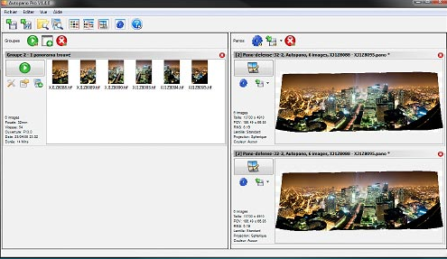
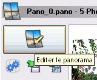

Scan et assemblage d’images
Scan : considérations générales
Les fois où l’on a besoin de scanner des images sont nombreuses :
- extension d’une construction existante :
- numérisation du plan papier existant
- import dans AutoCAD
- mise à l’échelle (en utilisant l’option “référence”)
- vectorisation de celui-ci, ou
- reprise complète du dessin, avec l’image en fond de plan
- ajout d’un plan cadastral :
- numérisation
- import dans AutoCAD
- mise à l’échelle (en utilisant l’option “référence”)
- numérisation de plan papier :
- numérisation de plan A0 (scanner à rouleau)
- vectorisation dans la foulée
- destruction du plan papier pour gagner en espace de stockage ... et diminuer les risques incendie, dégâts des eaux, au regard du délai de conservation trentenaire des documents.
ajout d’un logo, etc.
Les appareils de numérisation de documents papier sont des scanners. Ils sont équipés d’une caméra qui prend une “photo” du document, en fonction d’une zone que l’on aura déterminé à l’avance.
Note
- Résolution de scannage :
- attention à la taille des fichiers! Si on cherche à numériser un document avec une résolution trop élévée, la taille de l’image risque d’être disproportionnée par rapport à son utilisation. Une résolution de 300 dpi semble être correcte dans la plupart des cas
- Taille et poids :
- essayez de travailler avec des images “pesant” 3 à 4 Mo maximum. Dans le cas d’un assemblage de plusieurs d’entre-elles, on arrive souvent à une image finale de plus de 100 MO !
- Mémoire vive disponible :
- Ordinateur 32 bit : 4 GO semblent un minimum. (Essayez de charger une image (scannée bien-sûr!) de ~150 MO dans AutoCAD 32 bit, sur un ordinateur peu véloce, avec “juste” 2 GO de RAM : c’est impossible!) Pour les autres, en 64 bit, on peut rapidement grimper à 8 GO pour plus de confort.
- Logiciels :
- assemblage :
- les logiciels précedent permettent de “bricoler” un assemblage/panorama, soit manuellement, soit à l’aide de script/plugins. Si le projet contient 2400 images, il vaut mieux essayez des logiciels dédiés à cet usage, comme
- autopano : léger, pas très cher (100 €) et très performant. (pour les panoramas comportant une netteté époustouflante, ainsi qu’un nombre d’images incroyable, visitez les sites comme http://www.paris-20-gigapixels.com/fr/, http://www.yosemite-17-gigapixels.com/, http://www.harlem-13-gigapixels.com/)
- autodesk stitcher : interface “design” mais résultats quelquefois décevants.
- hugin (interface graphique à autopano) : gratuit –> rend de bons services, mais patience+ingéniosité nécessaire!
Scan : Photoshop
Scan
déposer le document à scanner sur la vitre d’exposition légèrement en travers, pour forcer le détramage de l’image
. le nom de votre logiciel/pilote “twain” changera en fonction de votre scanner...ici c’est un scanner A3 “EPSON GT10000+”
effectuez une prévisualisation, et réglez la fenêtre de scannage (zone en pointillée) à la taille / portion de document que vous désirez numériser.
réglez les options de scan à des valeurs minimales :
- résolution : 300 dpi (attention : un scan en A3 d’un document assez riche en détails, le tout sous une résolution de 1200 dpi, va “peser” facilement 350/450 MO !)
- si document en couleur : 24 bit couleur
- si document au trait : noir et blanc
scannez (= numérisez)
fermez le logiciel de scannage
depuis Photoshop, enregistrez l’image en format “natif” par défaut : le
*.psd(scan_maison-turlier_001.psd,scan..2.psd, etc.)
Si ces scans ont un “poids” trop important (3 à 4 MO semblent un maximum) :
- fichier > eregistrer pour le web et les périphériques
- choix paramètre prédéfini : jpeg supérieur
Post-traitement des images
- redressement image :
- outil > règle (accessible sous la pipette) : tracez une droite partant du coin gauche supérieur vers le coin droit supérieur
- image > rotation de l’image > paramétrée : la valeur de rotation est déjà calculée, grâce au traçage de la règle (si l’image apparaît à l’envers : indiquez 180°)
- OK
- Découpe des bords inutiles :
- outil > recadrage, ou C
- tracez une zone
- ajustez-là finement
- validez par OK
- Couleurs (tons clairs vers blanc et tons foncés vers noir) :
outil > pipette (doit être dessous l’outil règle)
maj + pipette et :
- cliquez sur 2 points distants les plus blancs de l’image
- cliquez sur 2 points distants les plus noirs de l’image
affichez la palette information :
F8affichage des valeurs en “niveau de gris” : vers le bas de la palette, cliquez sur l’icone de la pipette, en dessous des chifffres, et choisisez “niveau de gris” dans le menu déroulant
faites bouger le curseur des tons noirs (à gauche) légèrement vers la droite, jusqu’à que les points noirs présents dans la palette d’information soient à 100%
faites bouger le curseur des blancs légèrement vers la gauche, jusquà que les points blancs de la palette soient à 0%
- Renforcement netteté :
- filtre > renforcement > netteté optimisée
- grain : 200% maxi
- rayon : 1 pixel
Scan : Gimp
Assemblage : Photoshop
utilisation du script “photomerge” de création de panoramas
- choix (c’est pour assembler +sieurs scans en une seule image) : collage sélectionner les fichiers à coller (les 2 images scannées précédentes) validez (le traitement est automatique)
Avantage : intégré à toshop, facile Inconvénient : on a aucun contrôle sur le processus, et celui-ci peut donner des résultats abberrants.
Type de format de fichier pour l’enregistrement de l’image assemblée
Gimp
Ouverture de toutes les images :
* lancez gimp
* avec la commande ctrl + o, ouvrez toutes les images à assembler
Assemblage : Autopano Pro
Autopano Pro/Giga est un logiciel dédié à la réalisation de panoramas.
Parmi l’éventail des logiciels offrant cette fonctionnlaité, c’est l’un des plus efficace ; c’est la version payante d’un logiciel libre/gratuit en ligne de commande, autopano , dont l’interface graphique est Hugin .
Vous trouverez une documentation très riche sur le wiki d’autopano
Installation
- Téléchargez la version d’essai en vous rendant sur le site éponyme
- Configurez le logiciel pour qu’il utilise au mieux les capacités de votre ordinateur :
préférences :
- % de RAM à utiliser et priorité du processus
- nombre de coeurs/processeurs
- quantité de RAM
- emplacement du répertoire temporaire
détection :
- qualité : standard ou haute (+ lente)
- points de contrôle : 50 minimum
optimisation :
- algorithme robuste
- correction distorsion des lentilles
- distorsion avancée
Premier panoramique
- téléchargez le groupe d’images suivantes sur ce site (tutoriel autopano, version gratuite) et décompressez les images dans un dossier
- lancez Autopano et indiquez l’emplacement de ce dossier
3. Détection : Lancez la détection, si le logiciel ne l’a pas déjà fait : cela consiste à déterminer si un panorama est possible avec le lot d’images analysées. Vous pouvez encore configurer à cette étape la détection de groupe d’images (basée sur l’écart temporel de prise de vue), activer ou non un mode automatique, etc. le logiciel détermine un ou plusieurs panoramas en fonction des images présentes :

4. Pré-Assemblage : Le logiciel effectue automatiquement un préassemblage, et il est possible d’affiner ce travail en ré-éditant les préférences/détection du logiciel, notamment si le pré-assemblage ne donne pas satisfaction (raccords imparfaits, etc.)
5. Édition du préassemblage : Cliquez sur le bouton “éditer le panorama” 
Le nombre d’options est important, et nécessite un peu de réflexion :
- modes de projection:
- sphérique (par défaut) : convient pour des photos panoramiques de plus de 110° de champ horizontal et jusqu’à 360°, quelque soit l’endroit où l’on a placé la ligne d’horizon. C’est donc parfait si l’on a orienté l’appareil photo vers le haut ou la bas pour simuler un objectif à décentrement. Ce mode a tendance a tasser un peu le haut de la photo.
- cylindrique : convient pour des photos de 110° ou plus mais à la condition qu’il y est peu de décentrement auquel cas le haut (ou le bas) de la photo sera très, trop, étiré. C’est très disgracieux. Quand la ligne d’horizon est proche du milieu de la photo c’est un rendu agréable
- rectilinéaire : ne convient guère aux photos dont l’angle de champ dépasse les 100° à l’horizontal car comme cette géométrie est orthoscopique, les bords de l’image sont de plus en plus étirés, comme avec un vrai 14 mm
vue par image
mise à niveau/redressement : on peut redresser les perspectives
harmonisation des niveaux : ont peut égaliser les tons de différentes images en en prenant une comme repère (ancre)
Vous pouvez redresser l’image, ajouter des ligne verticales/horizontales pour “aider” le logiciel, retailler l’image, etc.
6. Rendu : Cliquez sur le bouton “effectuez” le rendu pour réaliser l’assemblage final
- Taille de sortie :
- restons à 100% de la taille originelle
- Algorithme :
- bicubique la plupart du temps
- bilinéaire le restant ...(rendu rapide)
- Mélangeur :
- Smartblend
- Format :
- si c’est pour réaliser un “fond de plan” à insérer dans un logiciel de dessin comme AutoCAD, on a intérêt à minimiser la taille de l’image, donc sa qualité : jpg
- si c’est pour imprimer ce panorama sur une feuille double A0, poussons les courseurs à fond ... psd/psb
À faire
Allez, au travail!
Contexte “professionnel” : vous venez de scanner en 18 passes (format A3 avec recouvrement entre les scans) un plan papier A0 datant de 1960.
Il vous faut maintenant assembler ces 18 images, que vous pouvez télécharger sur le site canopee
Vous y verrez un sous-dossier portant le même nom, avec le terme “_phatch” à la fin : c’est le nom d’un logiciel de traitement par lot d’images : j’ai pu réduire leur taille de 3Mo à 300 KO en 1 minute seulement! Ce logiciel phatch fonctionne aussi bien sous windows que linux. Il est très pratique pour réaliser un traitement identique (ici : réduction de la taille des images) sur un ensembles d’images (il est gratuit bien sûr).
Nota : le résultat de ce travail doit être importé dans AutoCAD, mis à l’échelle et entièrement re-dessiné.
Pour votre confort ... je vous laisse admire/utiliser le résultat à l’adresse web précédente.